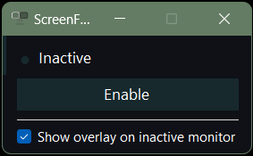

Free & open source · Windows
Flip to your OLED.
Flip back when you're done.
ScreenFlip makes your OLED the primary display for fullscreen gaming and dims the other screen. One click in, one click out. No settings menus to dig through.
Download for Windows See how it works
 |
Yep, that's the whole app. One button, one checkbox. It lives in your system tray and stays out of the way. |
Click Flip to swap the primary display.
Features
Built for one job, done well
Instant primary swap |
Makes your OLED the primary display with one click, using native Windows display APIs. Fullscreen games and overlays land where you want them. |
Dim the other screen |
Covers your secondary monitor with a near-black overlay so it won't distract you or wash out your OLED's contrast while you play. |
Flip on, flip off |
Enable to enter game mode; enable again to put everything back exactly as it was. Same window, same button. Just a toggle. |
Lives in the tray |
Minimizes to the notification area and stays out of your way. The tray icon shows at a glance whether game mode is currently active. |
Kind to your OLED |
Built for setups where the OLED sits secondary to avoid burn-in day to day, but needs to be primary for fullscreen gaming. |
Tiny and portable |
A single executable! No installer, no background services, under 150 MB. Built with C# and native Win32 calls. Nothing extra to add. |
How it works
Three clicks, start to finish
Open ScreenFlip and hit Enable
Your OLED becomes the primary display and the other screen dims. From here every fullscreen game opens on the OLED.
Play on your OLED
Games, launchers, and overlays all land on the right display. The dimmed second monitor stays quietly out of view.
Hit Enable again to flip back
Done for the night? One more click restores your primary monitor and clears the overlay. Everything's back to normal.
Download
Ready to flip?
Windows 10 & 11. A single executable. No install.
| Download ScreenFlip | ~150 MB | Windows 10 / 11 | Free forever |